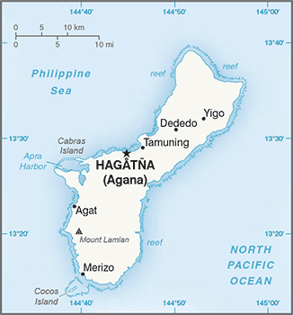
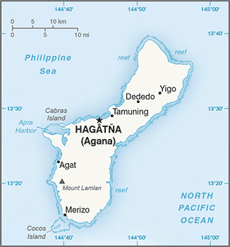

Australia-Oceania :: GUAM
Introduction :: GUAM
-
Spain ceded Guam to the US in 1898. Captured by the Japanese in 1941, it was retaken by the US three years later. The military installations on the island are some of the most strategically important US bases in the Pacific.
Geography :: GUAM
-
Oceania, island in the North Pacific Ocean, about three-quarters of the way from Hawaii to the Philippines13 28 N, 144 47 EOceaniatotal: 544 sq kmland: 544 sq kmwater: 0 sq kmcountry comparison to the world: 195three times the size of Washington, DC0 km125.5 kmterritorial sea: 12 nmexclusive economic zone: 200 nmtropical marine; generally warm and humid, moderated by northeast trade winds; dry season (January to June), rainy season (July to December); little seasonal temperature variationvolcanic origin, surrounded by coral reefs; relatively flat coralline limestone plateau (source of most fresh water), with steep coastal cliffs and narrow coastal plains in north, low hills in center, mountains in southmean elevation: NAelevation extremes: lowest point: Pacific Ocean 0 mhighest point: Mount Lamlam 406 maquatic wildlife (supporting tourism), fishing (largely undeveloped)agricultural land: 33.4%arable land 1.9%; permanent crops 16.7%; permanent pasture 14.8%forest: 47.9%other: 18.7% (2011 est.)2 sq km (2012)no large cities exist on the island, though large villages (municipalities) attract much of the population; the largest of these is Dededofrequent squalls during rainy season; relatively rare but potentially destructive typhoons (June to December)fresh water scarcity; reef damage; inadequate sewage treatment; extermination of native bird populations by the rapid proliferation of the brown tree snake, an exotic, invasive specieslargest and southernmost island in the Mariana Islands archipelago and the largest island in Micronesia; strategic location in western North Pacific Ocean
People and Society :: GUAM
-
167,358 (July 2017 est.)country comparison to the world: 186noun: Guamanian(s) (US citizens)adjective: GuamanianChamorro 37.3%, Filipino 26.3%, white 7.1%, Chuukese 7%, Korean 2.2%, other Pacific Islander 2%, other Asian 2%, Chinese 1.6%, Palauan 1.6%, Japanese 1.5%, Pohnpeian 1.4%, mixed 9.4%, other 0.6% (2010 est.)English 43.6%, Filipino 21.2%, Chamorro 17.8%, other Pacific island languages 10%, Asian languages 6.3%, other 1.1% (2010 est.)Roman Catholic 85%, other 15% (1999 est.)0-14 years: 27.54% (male 23,896/female 22,190)15-24 years: 16.63% (male 14,847/female 12,981)25-54 years: 37.44% (male 32,295/female 30,356)55-64 years: 9.8% (male 8,352/female 8,057)65 years and over: 8.59% (male 6,706/female 7,678) (2017 est.)total dependency ratio: 52.3youth dependency ratio: 38.8elderly dependency ratio: 13.6potential support ratio: 7.4 (2015 est.)total: 29 yearsmale: 28.3 yearsfemale: 29.7 years (2017 est.)country comparison to the world: 1110.26% (2017 est.)country comparison to the world: 17519.7 births/1,000 population (2017 est.)country comparison to the world: 816 deaths/1,000 population (2017 est.)country comparison to the world: 162-11.1 migrant(s)/1,000 population (2017 est.)country comparison to the world: 213no large cities exist on the island, though large villages (municipalities) attract much of the population; the largest of these is Dededourban population: 94.7% of total population (2017)rate of urbanization: 1.27% annual rate of change (2015-20 est.)HAGATNA (capital) 143,000 (2014)at birth: 1.06 male(s)/female0-14 years: 1.06 male(s)/female15-24 years: 1.08 male(s)/female25-54 years: 1.03 male(s)/female55-64 years: 1.02 male(s)/female65 years and over: 0.84 male(s)/femaletotal population: 1.03 male(s)/female (2016 est.)total: 12.6 deaths/1,000 live birthsmale: 12.3 deaths/1,000 live birthsfemale: 12.8 deaths/1,000 live births (2017 est.)country comparison to the world: 114total population: 76 yearsmale: 73.6 yearsfemale: 78.6 years (2017 est.)country comparison to the world: 942.96 children born/woman (2017 est.)country comparison to the world: 570.84 physicians/1,000 population (2007)improved:urban: 99.5% of populationrural: 99.5% of populationtotal: 99.5% of populationunimproved:urban: 0.5% of populationrural: 0.5% of populationtotal: 0.5% of population (2015 est.)improved:urban: 89.8% of populationrural: 89.8% of populationtotal: 89.8% of populationunimproved:urban: 10.2% of populationrural: 10.2% of populationtotal: 10.2% of population (2015 est.)NANANAtotal: 29.4%male: 29.7%female: 28.9% (2011 est.)country comparison to the world: 25
Government :: GUAM
-
conventional long form: Territory of Guamconventional short form: Guamlocal long form: Guahanlocal short form: Guahanetymology: the native Chamorro name for the island "Guahan" (meaning "we have" or "ours") was changed to Guam in the 1898 Treaty of Paris, whereby Spain relinquished Guam, Cuba, Puerto Rico, and the Philippines to the USorganized, unincorporated territory of the US with policy relations between Guam and the US under the jurisdiction of the Office of Insular Affairs, US Department of the Interiorpresidential democracy; a self-governing unincorporated territory of the USname: Hagatna (Agana)geographic coordinates: 13 28 N, 144 44 Etime difference: UTC+10 (15 hours ahead of Washington, DC, during Standard Time)none (territory of the US)none (territory of the US)Discovery Day (or Magellan Day), first Monday in March (1521)effective 1 July 1950 (Guam Act of 1950 serves as a constitution); amended many times, last in 2015 (2016)common law modeled on US system; US federal laws applysee United States18 years of age; universal; note - Guamanians are US citizens but do not vote in US presidential electionschief of state: President Donald J. TRUMP (since 20 January 2017); Vice President Michael R. PENCE (since 20 January 2017)head of government: Governor Eddie CALVO (since 3 January 2011); Lieutenant Governor Ray TENORIO (since 3 January 2011)cabinet: Cabinet appointed by the governor with the consent of the Legislatureelections/appointments: president and vice president indirectly elected on the same ballot by an Electoral College of 'electors' chosen from each state to serve a 4-year term (eligible for a second term); under the US Constitution, residents of unincorporated territories, such as Guam, do not vote in elections for US president and vice president; however, they may vote in Democratic and Republican presidential primary elections; governor and lieutenant governor elected on the same ballot by absolute majority vote in 2 rounds if needed for a 4-year term (eligible for 2 consecutive terms); election last held on 8 November 2016 (next to be held in November 2020)election results: Eddie CALVO reelected governor; percent of vote - Eddie CALVO (Republican Party) 63.9%, Carl GUTIERREZ (Democratic Party) 36.1%; Ray TENORIO (Republican Party) elected lieutenant governordescription: unicameral Legislature of Guam or Liheslaturan Guahan (15 seats; members elected in a single countrywide constituency by simple majority vote to serve 2-year terms)elections: last held on 8 November 2016 (next to be held in November 2018)election results: percent of vote by party - NA; seats by party - Democratic Party 9, Republican Party 6note: Guam directly elects 1 member by simple majority vote to serve a 2-year term as a delegate to the US House of Representatives; the delegate can vote when serving on a committee and when the House meets as the Committee of the Whole House, but not when legislation is submitted for a “full floor” House vote; election of delegate last held on 8 November 2016 (next to be held on 6 November 2018)highest court(s): Supreme Court of Guam (consists of 3 justices); note - appeals beyond the Supreme Court of Guam are referred to the US Supreme Courtjudge selection and term of office: justices appointed by the governor and confirmed by the Guam legislature; justices appointed for life subject to retention election every 10 yearssubordinate courts: Superior Court of Guam - includes several divisions; US Federal District Court for the District of Guam (a US territorial court; appeals beyond this court are heard before the US Court of Appeals for the Ninth Circuit)Democratic Party [Joaquin "Kim" PEREZ]Republican Party [Victor CRUZ]Guam Commission on DecolonizationGuam Federation of Teachers' UnionGuam Waterworks Authority WorkersWe Are GuahanAOSIS (observer), IOC, PIF (observer), SPC, UPUnone (territory of the US)none (territory of the US)territorial flag is dark blue with a narrow red border on all four sides; centered is a red-bordered, pointed, vertical ellipse containing a beach scene, a proa or outrigger canoe with sail, and a palm tree with the word GUAM superimposed in bold red letters; the proa is sailing in Agana Bay with the promontory of Punta Dos Amantes, near the capital, in the background; the shape of the central emblem is that of a Chamorro sling stone, used as a weapon for defense or hunting; blue represents the sea and red the blood shed in the struggle against oppressionnote: the US flag is the national flagcoconut tree; national colors: deep blue, redname: "Fanohge Chamoru" (Stand Ye Guamanians)lyrics/music: Ramon Manalisay SABLAN [English], Lagrimas UNTALAN [Chamoru]/Ramon Manalisay SABLANnote: adopted 1919; the local anthem is also known as "Guam Hymn"; as a territory of the United States, "The Star-Spangled Banner," which generally follows the playing of "Stand Ye Guamanians," is official (see United States)
Economy :: GUAM
-
US national defense spending is the main driver of Guam’s economy, followed by tourism and other services. Guam serves as a forward US base for the Western Pacific and is home to thousands of American military personnel. Total federal spending (defense and non-defense) amounted to $1.973 billion in 2014, or 40.4% of GDP. Of that total, federal grants amounted to $373.3 million in 2013, or 32.6% of Guam’s total revenues for the fiscal year. Service exports, mainly spending by foreign tourists to Guam, amounted to $651 million in 2013, or 13.3% of GDP. In 2013, Guam’s economy grew 0.6%. Despite slow growth, Guam’s economy has been stable over the last decade. National defense spending cushions the island’s economy against fluctuations in tourism.$4.882 billion (2013 est.)$4.756 billion (2012 est.)$4.562 billion (2011 est.)country comparison to the world: 175$4.6 billion (2010 est.)0.6% (2013 est.)1.8% (2012)-0.3% (2011)country comparison to the world: 181$30,500 (2013 est.)$29,800 (2012 est.)$28,600 (2011 est.)country comparison to the world: 62household consumption: 63.7%government consumption: 64.9%investment in fixed assets: 5.8%investment in inventories: NAexports of goods and services: 17%imports of goods and services: -51.2% (2013)agriculture: NA%industry: NA%services: NA%fruits, copra, vegetables; eggs, pork, poultry, beefnational defense, tourism, construction, transshipment services, concrete products, printing and publishing, food processing, textilesNA%70,490note: includes only the civilian labor force (2013 est.)country comparison to the world: 186agriculture: 0.3%industry: 21.6%services: 78.1% (2013)8.4% (2013 est.)8.2% (2010 est.)country comparison to the world: 10523% (2001 est.)lowest 10%: NA%highest 10%: NA%revenues: $1.147 billionexpenditures: $1.188 billion (2013 est.)24.9% of GDP (2013 est.)country comparison to the world: 118-0.9% of GDP (2013 est.)country comparison to the world: 6532.1% of GDP (2013)35.8% of GDP (2012)country comparison to the world: 1541 October - 30 September1.8% (2014 est.)4% (2011 est.)country comparison to the world: 117$828 million (2013 est.)$795 million (2012)country comparison to the world: 161transshipments of refined petroleum products, construction materials, fish, foodstuffs and beveragesPalau 20.3%, Japan 5.1% (2016)$2.501 billion (2013 est.)$2.438 billion (2012 est.)country comparison to the world: 152petroleum and petroleum products, food, manufactured goodsSingapore 32.1%, Japan 30.6%, South Korea 8.4%, Hong Kong 8.1% (2016)$NAthe US dollar is used
Energy :: GUAM
-
population without electricity: 66,724electrification - total population: 59%electrification - urban areas: 60%electrification - rural areas: 45% (2012)1.623 billion kWh (2015 est.)country comparison to the world: 1441.509 billion kWh (2015 est.)country comparison to the world: 1480 kWh (2016 est.)country comparison to the world: 1440 kWh (2016 est.)country comparison to the world: 157552,000 kW (2015 est.)country comparison to the world: 143100% of total installed capacity (2015 est.)country comparison to the world: 80% of total installed capacity (2015 est.)country comparison to the world: 1010% of total installed capacity (2015 est.)country comparison to the world: 1790% of total installed capacity (2015 est.)country comparison to the world: 1850 bbl/day (2016 est.)country comparison to the world: 1440 bbl/day (2014 est.)country comparison to the world: 1320 bbl/day (2014 est.)country comparison to the world: 1360 bbl (1 January 2017 es)country comparison to the world: 1430 bbl/day (2014 est.)country comparison to the world: 15215,400 bbl/day (2015 est.)country comparison to the world: 1500 bbl/day (2014 est.)country comparison to the world: 16215,230 bbl/day (2014 est.)country comparison to the world: 1310 cu m (2014 est.)country comparison to the world: 1430 cu m (2014 est.)country comparison to the world: 1880 cu m (2014 est.)country comparison to the world: 1140 cu m (2014 est.)country comparison to the world: 1330 cu m (1 January 2014 es)country comparison to the world: 1471.8 million Mt (2013 est.)country comparison to the world: 153
Communications :: GUAM
-
total subscriptions: 68,000subscriptions per 100 inhabitants: 42 (July 2016 est.)country comparison to the world: 152total: 181,000subscriptions per 100 inhabitatnts: 113 (July 2016 est.)country comparison to the world: 191general assessment: modern system, integrated with US facilities for direct dialing, including free use of 800 numbersdomestic: three major companies provide both fixed-line and mobile services, as well as access to the Internetinternational: country code - 1-671; major landing point for submarine cables between Asia and the US (Guam is a transpacific communications hub for major carriers linking the US and Asia); satellite earth stations - 2 Intelsat (Pacific Ocean) (2016)about a dozen TV channels, including digital channels; multi-channel cable TV services are available; roughly 20 radio stations (2009).gutotal: 125,328percent of population: 77.0% (July 2016 est.)country comparison to the world: 168
Transportation :: GUAM
-
5 (2013)country comparison to the world: 179total: 4over 3,047 m: 22,438 to 3,047 m: 1914 to 1,523 m: 1 (2017)total: 1under 914 m: 1 (2013)total: 1,045 km (2008)country comparison to the world: 186major seaport(s): Apra Harbor
Military and Security :: GUAM
-
defense is the responsibility of the US
Transnational Issues :: GUAM
-
none